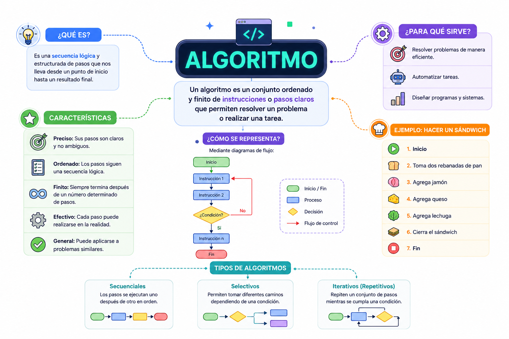

Cuando buscas una canción en Spotify, el sistema no adivina tus gustos por magia. Ejecuta un "algoritmo de recomendación". Este toma como entrada las canciones que has escuchado antes, procesa tus patrones de reproducción buscando similitudes con millones de usuarios y, finalmente, arroja como salida una lista personalizada de música nueva. Si este proceso no tuviera un fin o fuera ambiguo, la aplicación se congelaría o reproduciría ruido aleatorio.
⚠️ Debes visualizar el video completo sin adelantar para desbloquear la evaluación.
Material audiovisual adaptado con fines estrictamente educativos. Créditos del autor: Magic Markers.

En el corazón de la informática y la programación estructurada se encuentra el concepto de algoritmo. Un algoritmo no es código de computadora ni un lenguaje en específico; es una abstracción lógica previa. Se define como un método sistemático y estructurado para resolver un problema paso a paso, sirviendo como el mapa conceptual que posteriormente se traducirá a cualquier lenguaje de programación.
Desde una perspectiva académica y técnica, ¿qué es fundamentalmente un algoritmo?
Si un conjunto de instrucciones lógicas se ejecuta indefinidamente sin parar, rompe con el criterio de:
¿Cuáles son las tres etapas fundamentales que estructuran el flujo de información dentro de cualquier algoritmo?
Según el ejemplo de Spotify, ¿qué actúa como "Entrada" en su algoritmo de recomendación?
¿Qué significa la propiedad de "Univocidad o Definición" en un algoritmo académico?
¿Cuál es la relación real entre un algoritmo y un lenguaje de programación específico?
¿Qué autor define al algoritmo como un conjunto de reglas que garantizan alcanzar el mismo resultado a partir de un estado inicial?
Si una aplicación musical se congela por culpa de un bucle sin fin, ¿qué propiedad matemática falló?
En la definición técnica de un algoritmo, ¿qué significa que los pasos sean "ordenados y secuenciales"?
¿Cuál es el objetivo final de estructurar la abstracción de un problema en un algoritmo?